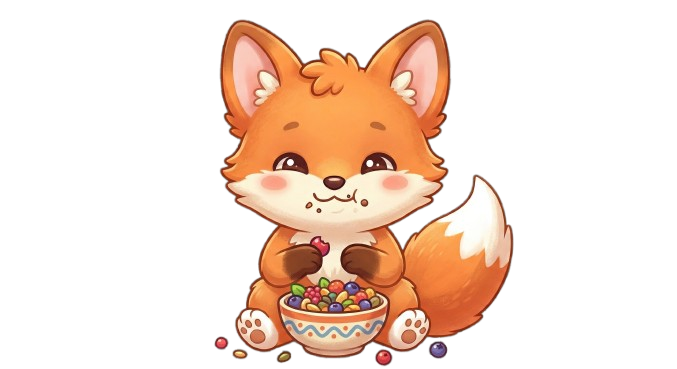
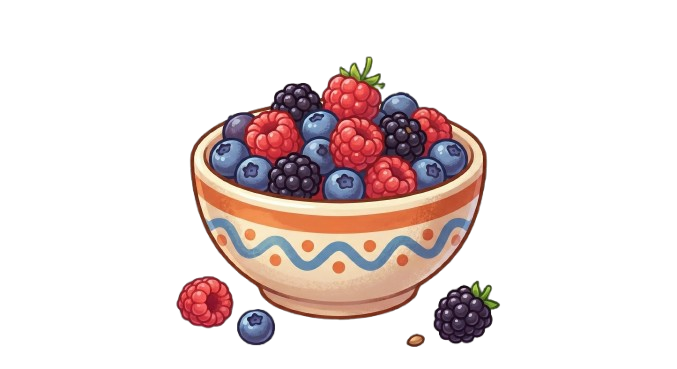

Fome
☀️
🌙
😊 Normal

Precisa de ajuda? 😎
Prof. Ferlini
Prof. Ferlini
vulgo Gostosinho
Parabéns por implementar o Tamagochi! Agora vai lá subir no Git antes que eu te reprove. 😄
Entendido, professor! 🫡
fechar